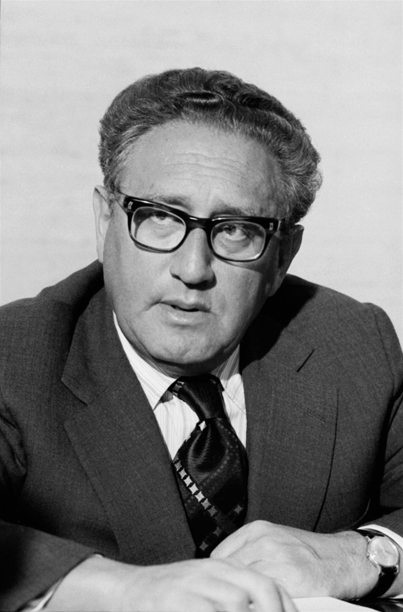
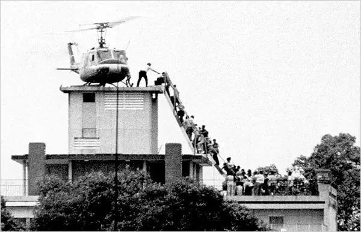

Nixon's expansion of the war into Cambodia triggered massive campus protests nationwide, leading to a tragic showdown:
Pro-war demonstrators march down Fifth Avenue in New York City holding banners supporting US troops and demanding victory over communism.
In the early years of the conflict, the vast majority of Americans backed their government's actions, with up to 85% supporting the policy in 1964:
- The Fear of Communism (The 'Red Scare'): During the 1950s, the USA experienced the 'Red Scare'—a period of intense anti-communist paranoia fueled by politicians like Senator Joe McCarthy. Following the Soviet takeover of Eastern Europe, the communist victory in China, and the Korean War, many Americans firmly believed in the Domino Theory and wanted to contain communism.
- Patriotism: Many Americans felt a strong sense of devotion and loyalty, embracing slogans like "My country, right or wrong". Patriots believed that protesting against the government was deeply unpatriotic and a betrayal of the troops, and they wanted America to defend the free world.
>
🎓 Scholarly Perspective: Cold War Consensus: Historians point to the early support for the war as the peak of the post-WWII 'Cold War consensus.' During this era, both political parties and the general public shared the unquestioned belief that global communism posed a mortal threat to US security, making military intervention in places like Vietnam seem not only justified but necessary.
> 🎙️
Eyewitness Testimony — Construction Worker: “These students are coddled brats. They get deferments from the draft, they live in comfortable university dorms, and then they spit on the American flag and call our boys in Vietnam 'baby killers.' My brother is over there right now, risking his life in the jungle. We work hard every day to build this city, and we love our country. When we saw them protesting and lowering the flag, we couldn't take it anymore. We went down there to show them that working men support the President and support our troops. You don't insult America and get away with it.”
Context: A New York construction worker (hardhat) interviewed after the 'Hardhat Riots' of May 8, 1970.💬
Reflective Question: How did the anti-war movement create deep social and class divisions in American society? How did Nixon capitalize on these divisions?
Knowledge Check (Q1)
What Cold War fear motivated ordinary Americans to support the military campaign in Vietnam?
- A. Fear of the global spread of communism ('The Red Scare')
- B. Fear of European economic domination
- C. Desire to colonize Southeast Asia
- D. Fear of Japanese invasion
Think-Pair-Share: Q2 Who did Nixon mean by the 'Silent Majority', and how did he use them to politically counter the anti-war movement?
| 1. My Thoughts (Think) |
2. Partner's Thoughts (Pair) |
|
|
Vietnam Veterans Against the War (VVAW) throw their medals over the Capitol fence in Washington D.C., April 1971.
Construction workers wearing hard hats clash with anti-war students in Lower Manhattan during the violent 'Hard Hat Riot' of May 1970.
Support for the war was highly visible among blue-collar construction workers, known as the 'hard hats':
- Who were they? The 'hard hats' were typically blue-collar, working-class men who fiercely supported Nixon's Vietnam policy. They strongly opposed the student anti-war movement, whom they saw as privileged, draft-exempt 'campus bums'.
- The Hard Hat Riot (8 May 1970): Following the Kent State shootings, anti-war students protested in Manhattan, New York. Around 200 construction workers charged the student protesters, physically attacking them and beating them with their hard hats, chanting "USA, love it or leave it" while police did very little to stop the violence.
- The Pro-War Rally: Shortly after the riot, the hard hats organised a massive pro-war rally outside New York's City Hall, drawing crowds estimated between 60,000 and 150,000 people to show their firm support for the government and the troops.
📝 Revision Task: Support for the War
To check your understanding of this topic, complete the following in your study notes:
- Define the terms 'silent majority' and 'hard hats'.
- Explain in one sentence how the 1950s 'Red Scare' contributed to early public support for the Vietnam War.
>
📝 Pro-War Context Remember that the anti-war movement did not represent all Americans. Nixon successfully tapped into a deep conservative patriotism that feared communism and hated radical student activism.
>
🎓 Scholarly Perspective: Class Divisions and Labor Patriotism: The Hard Hat Riots in New York City exposed a major cultural rift. Traditional trade union members, who had historically voted Democrat, attacked anti-war student protesters whom they saw as privileged and unpatriotic. Nixon capitalized on this by inviting union leaders to the White House, cementing the realignment of working-class voters away from the anti-war left.
Knowledge Check (Q4)
What did the trade union construction workers who attacked student anti-war protesters in New York City become known as?
- A. The 'Hard Hats'
- B. The 'Dixiecrats'
- C. The 'Green Berets'
- D. The 'White Guards'
Pair & Share Activity
Q5. How did the anti-war movement create deep social and class divisions in American society? How did Nixon capitalize on these divisions?
Active Tasks
Q6. Explain why some Americans supported US involvement in the Vietnam War in the years 1969–72. (12 marks)
Q7. Who did Nixon mean by the 'Silent Majority', and how did he use them to politically counter the anti-war movement?
Q8. What did the 'Hard Hat Riots' of 1970 reveal about class divisions within the American home front?
Historian's Corner: ⚖️ Dual Interpretation: Nixon's Silent Majority Appeal
Q9. Which historical interpretation provides a more convincing explanation of developments in KT 4.2: Why did some Americans support the Vietnam War and the 'Silent Majority'??
Source A
Source A: From a photograph of pro-war demonstrators at a rally in support of US troops, New York City, 1970.
[A photograph of citizens holding large US flags and signs reading 'Support Our President', 'Silent Majority Speaks', and 'Victory Over Communism in Vietnam'. They look patriotic and orderly.]
Source B
Source B: A photograph showing construction workers marching during the Hard Hat Riots in New York City, May 1970.
[A photograph showing thousands of construction workers wearing hard hats marching down a street. They are carrying American flags and banners reading 'USA All the Way' and cheering.]
Provenance Scaffolding:Scaffolding Clue: Evaluate the author, audience, and motive for both sources. For written accounts, consider if the author has political reasons to justify their actions. For photographs, consider what may be excluded outside the camera's frame.
Q10. How useful are Sources A and B for an enquiry into the views of the 'Silent Majority' and support for the Vietnam War? (8 marks)
L3: KT 4.3: How did the US exit Vietnam, and why did South Vietnam fall so quickly in 1975?[[SRC_MARKER:L14_Start]]
Learning Objectives
Demonstrate comprehensive historical knowledge of the key developments and figures in KT 4.3: How did the US exit Vietnam, and why did South Vietnam fall so quickly in 1975?.
Analyse conflicting motivations, tactics, and responses of groups and individuals involved in the crisis.
Evaluate competing historical interpretations and source evidence to construct reasoned causal judgments for Paper 3.
Recall & Retrieval
1. Who did President Nixon call the 'Silent Majority'?
2. Why did some Americans support US involvement in Vietnam?
3. What happened during the 'Hard Hat Riots' in New York City?
4. Which laws enforced racial segregation and discrimination in the Southern states in the 1950s?
5. What does the abbreviation NAACP stand for?
Vocabulary Check
Conceptual Classification: Categorise the terms from the word bank into the two historical boxes below:
1973 | Ho Chi Minh | War Powers Act | Case-Church Amendment | Operation Frequent Wind
Power, Governance & Warfare
Economy, Trade & Society

National Security Advisor Henry Kissinger and North Vietnamese negotiator Le Duc Tho conduct bilateral peace negotiations in Paris.
Extricating American forces was a long, complex diplomatic process marked by ongoing combat and secret deals:
- Reasons for Negotiations: The 1968 Tet Offensive proved the war was in a stalemate, creating a 'credibility gap' that led President Johnson to halt bombing and seek talks. Richard Nixon won the 1968 election on a promise of 'peace with honour'. Furthermore, mounting costs and rising casualties made the war unsustainable, leading Congress to threaten funding cuts.
- Official vs. Secret Talks: Official peace talks began in Paris in May 1968 but stalled immediately. The US wanted South Vietnam to remain independent and non-communist, while North Vietnam demanded the removal of President Thieu. As talks stalled, both sides pursued a strategy of "fighting and talking".
- Henry Kissinger's Role: As National Security Advisor, Kissinger bypassed official talks, holding secret negotiations with North Vietnam's chief negotiator, Le Duc Tho. They used détente (improving relations with China and the USSR) to pressure North Vietnam. When South Vietnam's President Thieu refused to sign a draft in late 1972, Nixon ordered the massive 'Christmas Bombings' (Operation Linebacker II) to force Hanoi back to the table and reassure Thieu of US backing.
>
🎓 Scholarly Perspective: The 'Decent Interval' Strategy: Traditional historians argue that
Henry Kissinger and
Richard Nixon pursued a 'decent interval' strategy in the peace negotiations. They privately recognized that South Vietnam's military could not survive without US air support, but sought a peace agreement that would delay the collapse of Saigon by a few years so that the eventual defeat would not be blamed directly on US foreign policy or Nixon's reelection campaign.
> 🎙️
Eyewitness Testimony — US Embassy Employee: “The gates of the embassy were surrounded by thousands of desperate people screaming to get in. We had worked for the Americans for years; we knew that if the Communists captured us, we would be sent to re-education camps or shot. I managed to climb the wall with my wife and get inside the courtyard. We watched helicopters land on the roof, load people, and fly away. But many were left behind. The American marines suddenly shut the doors, went to the roof, and locked the gates. They abandoned us. The helicopters stopped coming, and we heard the tanks of the North Vietnamese entering the city.”
Context: A South Vietnamese employee at the US Embassy in Saigon, recalling the chaotic evacuation on April 29-30, 1975.💬
Reflective Question: How does this eyewitness account challenge the idea that the US exit from Vietnam was an orderly, honorable retreat? What was the human cost of the sudden withdrawal?
Knowledge Check (Q1)
Who served as President Nixon's National Security Advisor and chief negotiator at the secret Paris peace talks?
- A. Henry Kissinger
- B. Robert McNamara
- C. Dean Rusk
- D. William Westmoreland
Think-Pair-Share: Q2 Why did historians argue that the Paris Peace Accords of 1973 were designed to create a 'decent interval'?
| 1. My Thoughts (Think) |
2. Partner's Thoughts (Pair) |
|
|

The formal signing of the Paris Peace Accords on January 27, 1973, which ended direct US military combat participation in Vietnam.
Signed on 27 January 1973, the Paris Peace Accords officially brought an end to direct US military involvement:
- Key Terms: Ordered an immediate ceasefire, the complete withdrawal of all US forces within 60 days, and the release of all American prisoners of war (POWs). Crucially, it allowed North Vietnamese troops to remain in the areas of South Vietnam they already controlled.
- Significance for the USA: It officially ended direct US military involvement in Vietnam. Congress subsequently passed the War Powers Act (1973) to restrict the President's ability to wage future wars without congressional approval. The withdrawal severely damaged America's global reputation, proving a superpower could be defeated by a smaller nation. Kissinger and Le Duc Tho were awarded the 1973 Nobel Peace Prize (though Le Duc Tho declined it).
- The Fall of Saigon (1975): The treaty was a disaster for South Vietnam. Left without US air support, the ARVN was vulnerable. North Vietnam violated the ceasefire, launching a massive invasion that culminated in the capture of the Southern capital of Saigon on 30 April 1975, unifying Vietnam under communist rule.
>
🎓 Scholarly Perspective: The Case-Church Amendment: Following the US troop withdrawal, the US Congress passed the Case-Church Amendment in June 1973, prohibiting any further US military activity in Indochina. This legally stripped the executive branch of the power to enforce the Paris Peace Accords using air support, ensuring that when North Vietnam launched its final offensive in 1975, the ARVN had to fight completely alone.
Knowledge Check (Q3)
What critical concession did the US make in the 1973 Paris Accords that sealed South Vietnam's eventual downfall?
- A. Allowing 150,000 North Vietnamese troops to remain inside South Vietnam
- B. Surrendering the city of Saigon immediately
- C. Paying $50 billion in war reparations to Hanoi
- D. Disarming the South Vietnamese military

A CIA helicopter evacuates evacuees from a rooftop near the US Embassy in Saigon as North Vietnamese tanks enter the city, April 29, 1975.
The Vietnam War exacted a devastating toll on the United States, leaving long-lasting scars:
- Human Costs: The war claimed the lives of over 58,000 American soldiers, and over 300,000 were wounded. Around 850,000 veterans suffered from Post-Traumatic Stress Disorder (PTSD), and the suicide rate among Vietnam veterans was double the national average. Returning soldiers often faced hostility from a deeply divided public.
- Economic Costs: The conflict cost the US approximately $167 billion to $170 billion. This massive spending led to rising inflation and deficits that weakened the 1970s US economy.
- The 'Great Society' Cuts: To fund the war, the government was forced to divert billions of dollars away from President Johnson's 'Great Society' domestic programmes. Vital funding intended to eradicate urban poverty, improve education, and aid civil rights in America's poorest neighbourhoods was lost.
- Loss of Trust: The war exacted a massive political toll. The American public lost faith and trust in their leaders, believing the government had systematically misled them throughout the conflict (as exposed by the Pentagon Papers).
📝 Revision Task: End of the War
To check your understanding of this topic, complete the following in your study notes:
- Write down the three main terms of the 1973 Paris Peace Agreement.
- Explain in one sentence how the massive cost of the Vietnam War negatively impacted President Johnson's domestic 'Great Society' programmes.
>
🎓 Scholarly Perspective: Economic consequences: Economic historians emphasize that President
Lyndon B. Johnson's refusal to raise taxes to pay for the Vietnam War—fearing it would derail his domestic 'Great Society' social welfare spending (a policy of funding both 'guns and butter')—sparked a massive federal deficit and severe inflation. This economic strain undermined the US economy throughout the 1970s and eroded political support for continuing the war.
Knowledge Check (Q4)
On what date did Saigon fall to North Vietnamese forces, ending the Vietnam War and reunifying the country under communism?
- A. April 30, 1975
- B. January 27, 1973
- C. July 4, 1976
- D. November 22, 1963
Pair & Share Activity
Q5. How does this eyewitness account challenge the idea that the US exit from Vietnam was an orderly, honorable retreat? What was the human cost of the sudden withdrawal?
Active Tasks
Q6. How useful are Sources B and C for an enquiry into the fall of Saigon in 1975? (8 marks)
Q7. Why did historians argue that the Paris Peace Accords of 1973 were designed to create a 'decent interval'?
Q8. What did the iconic image of the helicopter evacuation of the Saigon embassy in 1975 symbolize to the world?
Historian's Corner: ⚖️ Dual Interpretation: The Paris Peace Accords (1973)
Q9. Which historical interpretation provides a more convincing explanation of developments in KT 4.3: How did the US exit Vietnam, and why did South Vietnam fall so quickly in 1975??
Source A
Source A: From a photograph showing the signing of the Paris Peace Accords, 27 January 1973.
[A photograph showing foreign ministers and diplomats sitting around a massive circular table in a grand room in Paris. Several cameras are flashing as they sign the official treaty documents.]
Source B
Source B: A photograph showing the evacuation of the US embassy in Saigon, 29 April 1975.
[A photograph showing a long line of people climbing a ladder onto the roof of a building adjacent to the US embassy to board a CIA Huey helicopter. Thick smoke rises in the distance.]
Provenance Scaffolding:Scaffolding Clue: Evaluate the author, audience, and motive for both sources. For written accounts, consider if the author has political reasons to justify their actions. For photographs, consider what may be excluded outside the camera's frame.
Q10. How useful are Sources A and B for an enquiry into the peace process and the final withdrawal of the US from Vietnam? (8 marks)
L4: KT 4.4: What were the main reasons why the US failed to win the war in Vietnam?[[SRC_MARKER:L15_Start]]
Learning Objectives
Demonstrate comprehensive historical knowledge of the key developments and figures in KT 4.4: What were the main reasons why the US failed to win the war in Vietnam?.
Analyse conflicting motivations, tactics, and responses of groups and individuals involved in the crisis.
Evaluate competing historical interpretations and source evidence to construct reasoned causal judgments for Paper 3.
Recall & Retrieval
1. What did the Paris Peace Accords of 1973 agree?
2. Why did US forces withdraw from Vietnam in 1973?
3. What happened during the Fall of Saigon in April 1975?
4. Which laws enforced racial segregation and discrimination in the Southern states in the 1950s?
5. What does the abbreviation NAACP stand for?
Vocabulary Check
Spot the Deliberate Error: Read the statement below. One historical fact or vocabulary concept has been deliberately falsified. Underline the error and explain the accurate historical reality below:
Soviet Union and China | 19 | Fragging | 250 kilometers | Ho Chi Minh Trail
Challenge: Write ONE statement containing a deliberate historical misconception using Soviet Union and China or 19. Identify and correct the error:
Teacher Model / Historical Correction:
The Ho Chi Minh Trail: an intricate logistics network through Laos and Cambodia that the US Air Force was never able to sever permanently.
The North Vietnamese and the Vietcong (VC) possessed several major advantages that made them a formidable enemy:
- Russian and Chinese Support: North Vietnam was not fighting alone. Between 1954 and 1967, the communist superpowers of China and the USSR provided over $3 billion in financial aid and military equipment. This included vital supplies such as tanks, MiG fighter jets, 8,000 anti-aircraft guns, and 200 surface-to-air missile sites, which were used to shoot down hundreds of American planes.
- Vietcong Guerrilla Tactics: The VC fought a highly effective guerrilla war, using their expert knowledge of the jungle. They blended in with ordinary peasants, used hit-and-run ambushes, and laid deadly booby traps (like punji sticks), which were responsible for around 11% of all US deaths. They also used the tactic of "hanging onto the belts" of Americans—fighting at such close quarters that the US could not call in air strikes for fear of hitting their own men. Furthermore, the VC built massive underground tunnel networks (like those at Cu Chi) to move undetected and shelter from bombings.
- The Ho Chi Minh Trail: This was a massive, 15,000 km network of jungle paths running through neutral Laos and Cambodia into South Vietnam. It was crucial for survival, keeping the VC constantly supplied with up to 60 tons of equipment a day and 20,000 replacement soldiers a month. Despite heavy US bombing, teams of volunteers quickly repaired the trail to ensure supplies never stopped.
- Total Commitment: The Vietnamese communists were fighting for their survival and independence. They were willing to absorb a massive "body count" (losing between 500,000 and 900,000 people) that would have broken the will of any other army.
>
📝 Context Focus: Communist Strengths Explain how the combination of Chinese/Soviet material aid and high local commitment allowed the Vietcong to survive the US war of attrition.
>
🎓 Scholarly Perspective: Communist Resolve and Nationalism: Many historians argue that the primary cause of US defeat was the total commitment of the Vietnamese communists. Unlike the US, which fought a limited war, North Vietnam fought a total war of national liberation, meaning they were willing to accept near-infinite casualties (the 'commitment bug') and leverage superpower aid to achieve reunification.
> 🎙️
Eyewitness Testimony — Colonel Harry G. Summers Jr.: “I told the North Vietnamese colonel: 'You know, you never defeated us on the battlefield.' He looked at me, thought for a moment, and replied: 'That may be so. But it is also irrelevant.' We had all the firepower, we won almost every major engagement, and we killed ten times as many of their men. But they won the war because they were willing to suffer and die indefinitely for their independence, while our public at home lost the will to fight. They understood that war is a political struggle, not just a military scorecard.”
Context: US Army historian and veteran, recounting an exchange in Hanoi in April 1975 with North Vietnamese Colonel Nguyen Don Tu.💬
Reflective Question: Why is it possible to win every military battle but still lose a war? How does this sum up the core failure of the US intervention in Vietnam?
Knowledge Check (Q1)
Which two major communist superpowers provided crucial military hardware, anti-aircraft missiles, and financial aid to North Vietnam?
- A. The Soviet Union (USSR) and China
- B. Cuba and North Korea
- C. France and Britain
- D. East Germany and Poland
Think-Pair-Share: Q2 Why was the US military unable to defeat an enemy that fought using asymmetric guerrilla warfare?
| 1. My Thoughts (Think) |
2. Partner's Thoughts (Pair) |
|
|

Exhausted US conscripts on a search and destroy patrol; low morale, short one-year tours of duty, and drug abuse plagued late-war forces.
The US military relied heavily on superior technology, but their strategies were fundamentally flawed for the type of war they were fighting:
- Weaknesses of the US Armed Forces: The US army was heavily reliant on the draft system, meaning many soldiers were young (the average age was 19), inexperienced, and did not want to be there. Soldiers only served a one-year "tour of duty", so as soon as they gained experience, they were sent home. This led to plummeting morale. To cope with the stress, tens of thousands of soldiers turned to drug abuse (such as marijuana and heroin). Discipline collapsed so badly that "fragging" became common—this was when soldiers murdered their own commanding officers to avoid being sent into dangerous combat. Furthermore, US troops completely lacked an understanding of the Vietnamese language, culture, and geography.
- The Failure of US Tactics: The US military measured success by "body count" (how many enemies they killed), but this was useless against an enemy willing to accept endless losses.
- Operation Rolling Thunder: Completely failed to cut off the Ho Chi Minh Trail or break North Vietnamese morale, and cost the US more money than the damage it caused.
- Search and Destroy: Missions and the use of devastating chemical weapons like Napalm and Agent Orange completely failed to win the "hearts and minds" of the South Vietnamese people. Instead, these brutal tactics destroyed innocent villages, killed thousands of civilians, and actively drove angry peasants into supporting the Vietcong.
>
📝 Key Focus: US Tactical Errors Be prepared to explain how the search-and-destroy tactics and use of chemical agents backfired by alienating the South Vietnamese peasant population.
>
🎓 Scholarly Perspective: Attrition vs. Counter-Insurgency: Historians debate whether US military tactics were fundamentally flawed or simply poorly executed. Revisionist scholars suggest that the US could have won if they had abandoned the conventional 'strategy of attrition' (relying on body counts and heavy bombing) in favor of a population-centric counter-insurgency strategy that prioritized security for South Vietnamese villages.
Knowledge Check (Q3)
What slang term referred to disgruntled US enlisted soldiers attempting to assassinate their own unpopular officers with grenades?
- A. 'Fragging'
- B. 'Drafting'
- C. 'Sniping'
- D. 'Zippoing'

The collapse of the domestic political consensus forced consecutive presidents to limit ground operations and eventually withdraw.
Ultimately, the United States is a democracy, meaning the government cannot fight a war without the support of its voting public. The collapse of the home front made it impossible for the USA to continue the war:
- The Media and the 'Credibility Gap': Vietnam was the first "televised war." When the American public saw graphic footage of the Tet Offensive (1968) and the horrors of the My Lai Massacre, it destroyed the government's claims that victory was just around the corner. This created a massive "credibility gap" where the public realised they were being lied to, leading to widespread outrage and demands for peace.
- Massive Protests: Politicians faced intense pressure from anti-war protests, student strikes, and draft resistance. The protests proved that the American public was no longer willing to accept the high human cost (over 58,000 dead soldiers).
- Economic Cost: The war cost the US government a staggering $167 billion to $168 billion. This massive expense caused inflation and forced the government to cancel funding for domestic improvements (like President Johnson's 'Great Society' programmes). Because the war became unthinkably expensive and highly unpopular, politicians like President Nixon had no choice but to seek a withdrawal.
📝 Revision Task: Failure in Vietnam
To check your understanding of this topic, complete the following in your study notes:
- Explain what the Vietcong tactic of "hanging onto the belts" meant.
- List two reasons why the US "tour of duty" system weakened the American armed forces.
>
🎓 Scholarly Perspective: The Role of the Home Front: The collapse of the domestic consensus remains a highly contentious topic. Some historians argue that the uncensored media coverage and campus protests were the primary drivers that forced the US government to withdraw. Others argue that the home front collapse was a symptom, not the cause, of a military stalemate that showed no signs of ending.
Knowledge Check (Q4)
What 1973 federal law restricted the US President's ability to commit armed forces to foreign conflicts without congressional approval?
- A. The War Powers Act (1973)
- B. The Gulf of Tonkin Resolution
- C. The Patriot Act
- D. The Marshall Plan
Pair & Share Activity
Q5. Why is it possible to win every military battle but still lose a war? How does this sum up the core failure of the US intervention in Vietnam?
Active Tasks
Q6. Why was the US military unable to defeat an enemy that fought using asymmetric guerrilla warfare?
Q7. How did the economic cost of the war ('Guns and Butter') weaken the US home front?
Historian's Corner: ⚖️ Dual Interpretation: Reasons for US Defeat in Vietnam
Q8. Which historical interpretation provides a more convincing explanation of developments in KT 4.4: What were the main reasons why the US failed to win the war in Vietnam??
Q9. 'The main reason the United States failed to win the Vietnam War was the military effectiveness of Vietcong guerrilla tactics.' How far do you agree with this statement? (16 marks + 4 SPaG)
You may use the following in your answer:
- Vietcong guerrilla tactics and tunnel networks
- The domestic anti-war movement and the 'credibility gap'
You must also use information of your own.
Generated: 2026-09-14 12:52:46 UTC | Unit: usa